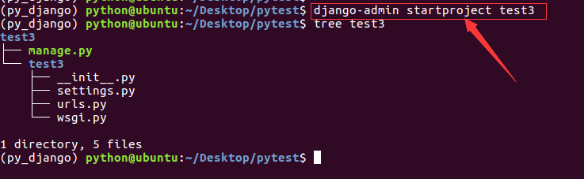
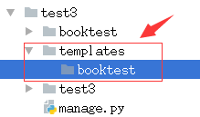
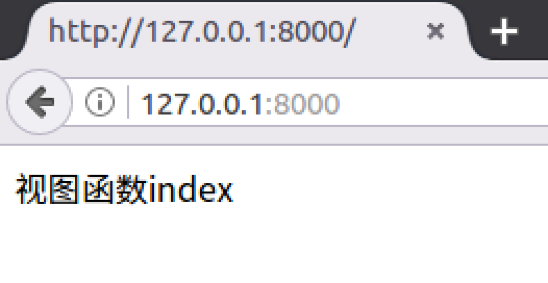

视图
视图的功能
视图负责接受Web请求HttpRequest，进行逻辑处理，返回Web响应HttpResponse给请求者。
创建示例项目
1) 创建项目test3。
django-admin startproject test3

2) 进入项目目录，创建应用booktest。
cd test3
python manage.py startapp booktest

3) 在test3/settings.py中INSTALLED_APPS项安装应用
4) 在test3/settings.py中DATABASES项配置使用MySQL数据库test2，数据库在第二部分已经创建。
5) 在test3/settings.py中TEMPLATES项配置模板查找路径。

6）创建模板目录结构如下。

使用视图的过程
视图就是一个python函数，被定义在"应用/views.py"文件中。 使用视图时需要进行两方面操作，两个操作不分先后。
1）在"应用/views.py"中定义视图。
在booktest/views.py中定义视图函数index：
def index(request):
return HttpResponse("视图函数index")
2）配置URLconf，将视图函数和url对应起来。
在test3/urls.py中编辑加入如下代码：
from django.conf.urls import include, url
from django.contrib import admin
urlpatterns = [
url(r'^admin/', include(admin.site.urls)),
url(r'^', include('booktest.urls')), #这句代码是新加入的，包含booktest应用中的urls文件
]
在booktest目录下创建urls.py文件并编辑其内容如下：
from django.conf.urls import url #导入url函数
from booktest import views #导入视图模块
urlpatterns = [
url(r'^$', views.index), #建立url和views.index视图函数的关联
]
启动服务器
启动服务器，并通过浏览器访问 http://127.0.0.1:8000， 页面显示如下：
